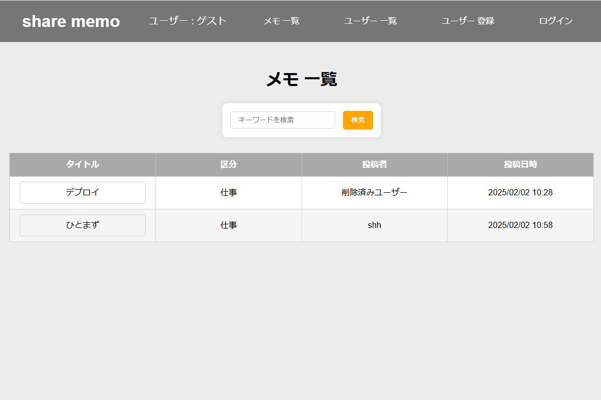

Product

メモ共有アプリ
・2025年1月作成（制作期間は約1週間）
・ejs/ CSS/ Node.js/ Mysql/ VSCode/ Git/ railway
javascriptを学ぶ中で、サーバーサイドをjavascriptで実行できるNode.jsを知り、もともとのWEBアプリを開発したいという気持ちから強く惹かれ、家族と何か共有できるツールとしてメモ帳アプリを作成しました。
ルーティングやCRUD、railwayでのデプロイなど、初めてづくしでハードルは様々ありましたが、成長も感じることができました。
今後はREST APIやネットワークなどの理解を深め、効率的かつセキュアな開発を行いたいと思います。